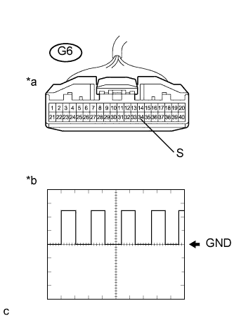

СИСТЕМА ИЗМЕРИТЕЛЬНЫХ ПРИБОРОВ И ИНДИКАТОРОВ > Неисправен тахометр |
| 1.ПРОВЕРЬТЕ СИСТЕМУ ПЕРЕДАЧИ ДАННЫХ CAN |
Проверьте, не выводятся ли DTC системы передачи данных CAN.
Для моделей с левосторонним рулевым управлением и системой посадки и запуска Нажмите здесь.
Для моделей с левосторонним рулевым управлением без системы посадки и запуска Нажмите здесь.
Для моделей с правосторонним рулевым управлением и системой посадки и запуска Нажмите здесь.
Для моделей с правосторонним рулевым управлением без системы посадки и запуска Нажмите здесь.
| Результат | Следующий шаг |
| Код DTC для шины CAN не выводится. | А |
| Выводится DTC для шины CAN. (для моделей с левосторонним рулевым управлением и системой посадки и запуска) | B |
| Выводится DTC для шины CAN. (для моделей с левосторонним рулевым управлением без системы посадки и запуска) | C |
| Выводится DTC для шины CAN. (для моделей с правосторонним рулевым управлением и системой посадки и запуска) | D |
| Выводится DTC для шины CAN. (для моделей с правосторонним рулевым управлением без системы посадки и запуска) | E |
|
| ||||
|
| ||||
|
| ||||
|
| ||||
| А | |
| 2.ПРОВЕРЬТЕ ТИП ДВИГАТЕЛЯ |
Проверьте тип двигателя.
| Тип двигателя | Следующий шаг |
| Не 5L-E | А |
| 5L-E | B |
|
| ||||
| А | |
| 3.ВЫПОЛНИТЕ ДИАГНОСТИКУ В РЕЖИМЕ ACTIVE TEST С ПОМОЩЬЮ ПОРТАТИВНОГО ДИАГНОСТИЧЕСКОГО ПРИБОРА (TACHO METER OPERATION) |
Подсоедините портативный диагностический прибор к DLC3.
Установите замок зажигания в положение ON (ВКЛ).
Включите портативный диагностический прибор.
Войдите в следующие меню: Body Electrical / Combination Meter / Active Test.
Проверьте работу по данным в следующей таблице.
| Информация на дисплее прибора | Испытываемое устройство | Диапазон регулирования | Замечание по диагностике |
| Tacho Meter Operation | Тахометр | 0, 1000, 2000, 3000, 4000, 5000, 6000, 7000* (об/мин) | Убедитесь в том, что автомобиль остановлен, и двигатель работает на холостом ходу. |
|
| ||||
| OK | |
| 4.СНИМИТЕ ПОКАЗАНИЯ С ПОМОЩЬЮ ПОРТАТИВНОГО ДИАГНОСТИЧЕСКОГО ПРИБОРА (ENGINE RPM) |
Подсоедините портативный диагностический прибор к DLC3.
Установите замок зажигания в положение ON (ВКЛ).
Включите портативный диагностический прибор.
Войдите в следующие меню: Body Electrical / Combination Meter / Data List.
Проверьте значения в соответствии с таблицей ниже.
| Информация на дисплее прибора | Измеряемая величина / диапазон измерения | Нормальное состояние | Замечание по диагностике |
| Engine Rpm | Частота вращения коленчатого вала двигателя/ мин.: 0 об/мин, макс.: 12750 об/мин | 600–700 об/мин (при работе на холостых оборотах) | Если данные, принимаемые от ECM, выходят за пределы диапазона индикации щитка приборов, на щитке продолжает отображаться максимальное значение из диапазона. |
Запишите значение частоты вращения коленчатого вала двигателя, отображаемое на дисплее диагностического прибора.
|
| ||||
| OK | |
| 5.СНИМИТЕ ПОКАЗАНИЯ ПОРТАТИВНОГО ДИАГНОСТИЧЕСКОГО ПРИБОРА (ENGINE SPEED) |
Подсоедините портативный диагностический прибор к DLC3.
Установите замок зажигания в положение ON (ВКЛ).
Включите портативный диагностический прибор.
Войдите в следующие меню: Powertrain / Engine and ECT / Data List.
Проверьте значения в соответствии с таблицей ниже.
| Информация на дисплее прибора | Измеряемая величина / диапазон измерения | Нормальное состояние | Замечание по диагностике |
| Engine Speed | Частота вращения коленчатого вала двигателя/ мин.: 0 об/мин, макс.: 16383 об/мин | 600–700 об/мин (при работе на холостых оборотах) | - |
| Результат | Следующий шаг |
| OK | А |
| NG (для моделей с 1GR-FE) | B |
| NG (для моделей с 2TR-FE) | C |
| NG (для моделей с 1KD-FTV, без DPF) | D |
| NG (для моделей с 1KD-FTV, с DPF) | E |
|
| ||||
|
| ||||
|
| ||||
|
| ||||
| А | |
| 6.ЗАМЕНИТЕ ECM |
Замените ЕСМ новым или заведомо исправным блоком.
Для моделей с 1GR-FE Нажмите здесь.
Для моделей с 2TR-FE Нажмите здесь.
Для моделей с 1KD-FTV Нажмите здесь.
Проверьте работу тахометра.
|
| ||||
| OK | ||
| ||
| 7.ВЫПОЛНИТЕ ДИАГНОСТИКУ В РЕЖИМЕ ACTIVE TEST С ПОМОЩЬЮ ПОРТАТИВНОГО ДИАГНОСТИЧЕСКОГО ПРИБОРА |
Подсоедините портативный диагностический прибор к DLC3.
Установите замок зажигания в положение ON (ВКЛ).
Включите портативный диагностический прибор.
Войдите в следующие меню: Body Electrical / Combination Meter / Active Test.
Проверьте работу по данным в следующей таблице.
| Информация на дисплее прибора | Испытываемое устройство | Диапазон регулирования | Замечание по диагностике |
| Tacho Meter Operation | Тахометр | 0, 1000, 2000, 3000, 4000, 5000, 6000 (об/мин) | Убедитесь в том, что автомобиль остановлен, и двигатель работает на холостом ходу. |
|
| ||||
| OK | |
| 8.ПРОВЕРЬТЕ ФОРМУ СИГНАЛА (ЧАСТОТЫ ВРАЩЕНИЯ КОЛЕНЧАТОГО ВАЛА ДВИГАТЕЛЯ) |
Отсоедините разъем G6 щитка приборов.
|  |
С помощью осциллографа проверьте форму сигнала.
| Позиция | Описание |
| Контакты для подключения диагностического прибора | G6-34 (S) - масса |
| Настройки прибора | 5 В/дел., 20 мс/ дел. |
| Условие | Холостые обороты при прогретом двигателе |
| *a | Вид спереди разъема со стороны жгута проводов: (к щитку приборов в сборе) |
| *b | Форма сигнала частоты вращения |
|
| ||||
| OK | ||
| ||
| 9.ПРОВЕРЬТЕ ЖГУТ ПРОВОДОВ И РАЗЪЕМ |
Отсоедините разъем G62 ЕСМ.
Измерьте сопротивление в соответствии со значениями, приведенными в таблице ниже.
| Контакты для подключения диагностического прибора | Состояние | Заданные условия |
| G62-7 (TACH) - G6-34 (S) | Всегда | Менее 1 Ом |
| G62-7 (TACH) - масса | Всегда | 10 кОм или более |
|
| ||||
| OK | |
| 10.ЗАМЕНИТЕ ECM |
Замените ЕСМ новым или заведомо исправным блоком (Нажмите здесь).
|
| ||||
| OK | ||
| ||